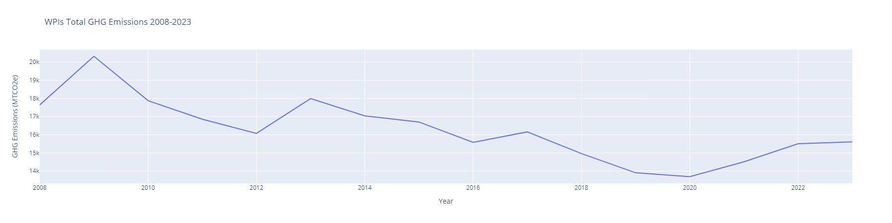
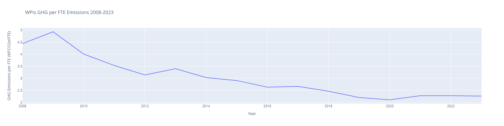
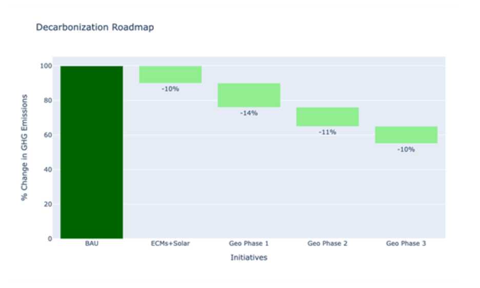
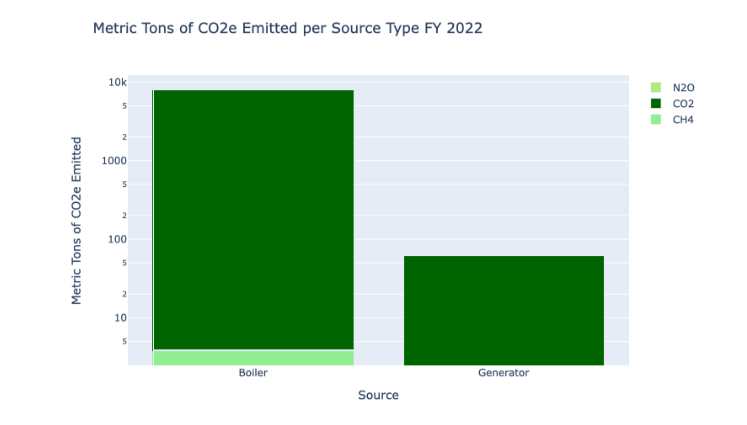

Sustainability at Worcester Polytechnic Institute
In confronting the immense challenges posed by the emissions of greenhouse gases from human activities and their implications on global warming, our focus shifts towards plans of action in our local community. Worcester Polytechnic Institute (WPI) can spearhead innovative sustainable operational technologies, enhance climate communication efforts, and serve as a model for other collegiate communities to undertake their own sustainability initiatives towards achieving carbon neutrality. WPI is actively fostering a culture of sustainability on campus and nurturing its local and regional community as a hub for sustainability innovation.
Recognizing the urgency of reducing carbon emissions, WPI has joined the Second Nature Group and is committed to achieving carbon neutrality expeditiously. In 2020, WPI initiated a five-year sustainability plan encompassing objectives such as establishing a dedicated office of sustainability, implementing a comprehensive lighting plan, and integrating sustainability projects into the curriculum. With this plan set to expire in 2025, WPI has recently entered a $45 million public-private partnership (P3) with Harrison Street, an investment management firm based in Chicago. Harrison Street's role in the partnership includes leasing, managing, operating, developing, and financing WPI's on-campus utility system, with a focus on sustainability initiatives.
In pursuit of carbon neutrality, the Office of Sustainability at WPI tracks and manages the campus' consumption of electricity, water, and gas, dating back to 2008. Despite the campus's expansion in terms of student population and physical footprint, WPI's estimated greenhouse gas emissions have decreased, underscoring the impact of ongoing sustainability initiatives. Collaborating with sustainability firm GreenerU, the office of sustainability has implemented a campus-wide LED lighting system to reduce electricity consumption. According to GreenerU, WPI’s older buildings, such as Goddard Hall, have already seen a 53% reduction in energy usage since the installation of the new lighting technology (GreenerU, 2023).
By analyzing the overall electricity usage over the past 13 years, it is evident that these initiatives alone, like the lighting initiative, have been impactful in making WPI a more sustainable campus. Despite WPI’s growing campus with the addition of new campus buildings including south village and unity hall, adding over 730,000 square feet to WPI’s footprint. WPI’s collective electricity usage per student has declined from 2010-2023. See figure below.
The Office of Sustainability also tracks the estimated greenhouse gas emissions from campus using UNH’s SIMAP technology. “SIMAP® is a carbon and nitrogen-accounting platform that can track, analyze, and improve your campus-wide sustainability,” (SIMAP, 2024). By analyzing the total GHG emissions from WPI’s entire campus, we can see that the initiatives already implemented have contributed to lowering WPI’s overall greenhouse gas emissions.
As seen in figure 2, the overall campus Greenhouse gas emissions have trended downward, with peaks and dips, and increased emissions starting in 2020. To normalize this data so it reflects the growing student body, we can observe the total greenhouse gas emissions per student (FTE). In figure 3 below, it is observed that there is a much smoother downward trend in WPI’s campus greenhouse gas emissions per student.
Anticipated advancements in sustainability technologies through the Harrison Street partnership are expected to accelerate these trends further. Moving forward, the Office of Sustainability aims to establish specific, measurable, and attainable goals aligned with the overarching mission of carbon neutrality. Leveraging the technologies and insights facilitated by the Harrison Street partnership, WPI will continue to make significant strides towards its goal of carbon neutrality. Currently, the engineering firms involved in this partnership like Cogen Power Technologies and Salas Obrien are taking over operations at WPI’s on-campus power plant and drilling trial wells around WPI’s campus. These energy conservation measures are projected to reduce WPI's annual greenhouse gas emissions by 45%, according to the office of sustainability partner Salas Obrien, who are developing an energy framework plan and investigating the feasibility and benefit of geothermal wells around campus. A roadmap of the first phase of this framework can be found in figure 4 below, which shows the estimated reductions in greenhouse gas emissions for each campus initiative.
According to the emissions data from the office of sustainability, and as seen in figure 5, a majority of the campus’ greenhouse gas emissions come from the boilers around campus, mostly which reside in the campus power plant, called the Powerhouse. By implementing these changes, we can reduce the need and usage of the powerhouse and continue towards carbon neutrality by using cleaner sources of energy like geothermal wells.
As WPI slowly makes their way towards carbon neutrality, it is important that we improve climate communication around campus to spread the word and get students, faculty, and community members involved in the movement. With these changes and innovative advancements through sustainability research on campus, WPI can inspire other campuses around Massachusetts and even the global university sector.